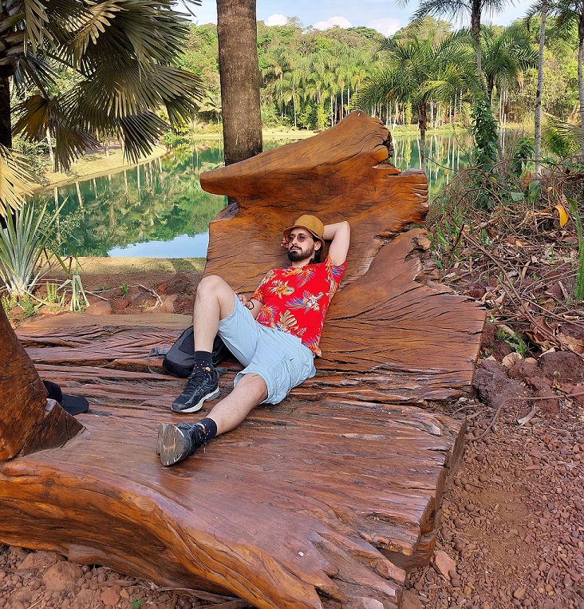

Hugo Tremonte de Carvalho
Federal University of Rio de Janeiro

I am an Assistant Professor in the Department of Statistical Methods at the Federal University of Rio de Janeiro (UFRJ), where I am fortunate to combine my two passions: music and mathematics. My main research interest is applying statistics to the intersection between them. I also work on music information retrieval, statistical signal processing and computational statistics.
Together with Carlos Almada, I coordinate Projeto MPB. The project aims to map systematically the aesthetic and musical landscape informally known as Brazilian Popular Music: we build corpora of representative compositions and analyze them in statistical and musical detail. I also collaborate with the ARME Project at the University of Birmingham. It studies how musicians synchronize with each other and models this behavior computationally, toward a training tool in which believable virtual musicians play along with the user. I am a member of the MusMat Research Group and of the editorial board of MusMat • Brazilian Journal of Music and Mathematics.
I was born in São Paulo, Brazil. I hold a B.Sc. (2011) and an M.Sc. (2013) in Applied Mathematics from UFRJ; my master’s monograph, in Portuguese, is An Introduction to Singularities in General Relativity. I also hold a D.Sc. in Electrical Engineering (Signal Processing) from COPPE/UFRJ (2017), supervised by Luiz Wagner Pereira Biscainho and Flávio Rainho Ávila, with the thesis Bayes Meets Bach: Applications of Bayesian Statistics to Audio Restoration.
Outside work, I brew beer at home with my wife, play classical guitar, study music composition (and compose!) and paint in watercolor. I am also a science fiction enthusiast, especially of the Star Trek universe, and a fan of J. R. R. Tolkien’s legendarium.
Contact me!
To keep my address away from spam bots, it only appears when you ask for it: